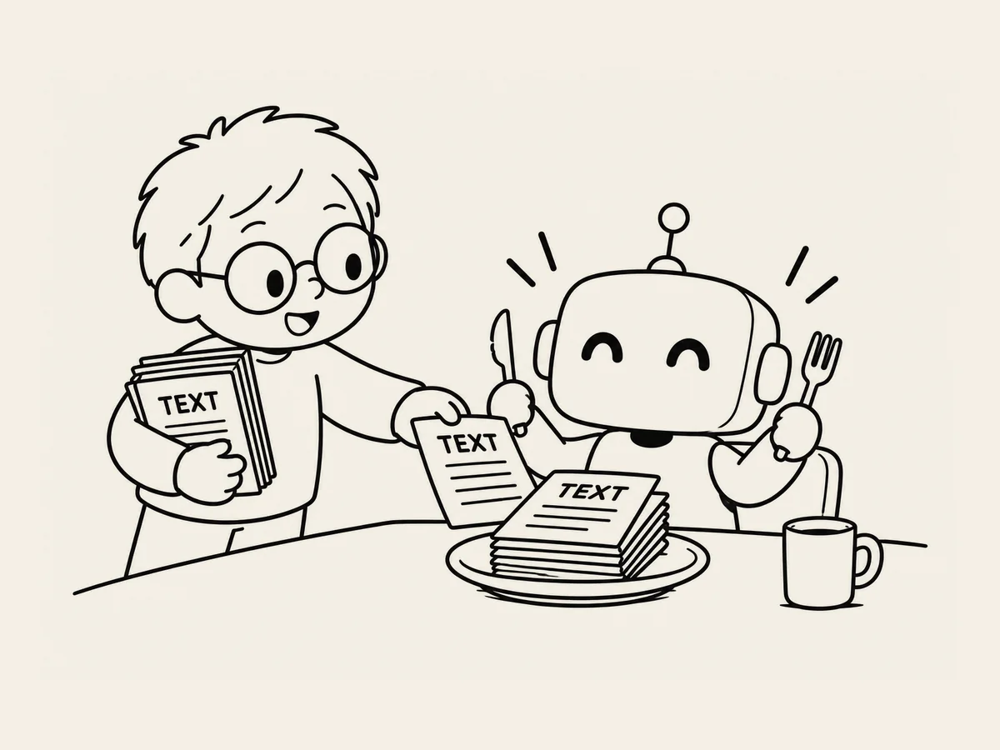

19.
L’IA se nourrit de TEXT.
À force de travailler avec l’IA,
j’ai commencé à comprendre certaines de ses particularités.
L’une d’elles :
l’IA lit très bien les textes.
Vite,
et elle les comprend plutôt bien.
À mesure que je créais le site,
mes conversations avec l’IA devenaient de plus en plus longues.
Et là, un problème est apparu.
Chaque fois que je commençais une nouvelle conversation,
il fallait tout expliquer à nouveau.
Elle se souvenait de certaines choses,
mais sa mémoire avait ses limites.
Ce qu’on avait fait jusque-là.
Ce qu’on avait décidé.
Ce qu’on avait décidé de ne pas faire.
Pour éviter les erreurs,
il fallait tout réexpliquer en détail.
Mais quand est-ce que j’allais pouvoir raconter tout ça ?
Alors j’ai simplement copié nos conversations
dans un fichier texte
et je l’ai enregistré.
Puis, au début d’une nouvelle conversation,
je lui donnais le fichier.
« Lis ça. »
Elle le lisait rapidement
et comprenait.
Puis on reprenait là où on s’était arrêtés.
Hein ?
C’est pratique.
À partir de là,
j’ai pris une habitude.
Quand ça devenait trop long,
je mettais tout dans un fichier texte.
Quand je passais le travail à une autre IA,
je lui donnais aussi le texte.
Comme ça,
plus besoin de tout expliquer depuis le début.
Si j’avais dû passer des heures
à tout réexpliquer chaque fois,
je n’aurais probablement pas pu continuer.
Je lui donne simplement un fichier.
Elle le lit rapidement
et se remet au travail.
À un moment,
j’ai commencé à donner du texte à l’IA
avant même de lui donner du travail.
Un peu comme si je commençais par la nourrir.
La nourriture de l’IA, c’est le TEXT.
